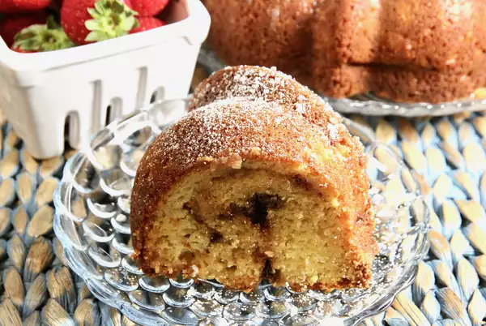

Toffee Bundt Cake

Description
This toffee bundt cake is just as it sounds, a bundt cake that tastes like toffee! Packed full of sugar, this light, spongy treat is sure to be devoured at any party or gathering. This dessert is an excellent choice for holidays where you want a warm feeling in your stomach, such as Thanksgiving or Christmas!
Ingredients
- 1 (15.25 oz) package of yellow cake mix
- 1 (5.1 oz) package of vanilla instant pudding mix
- 2/3 cup vegetable oil
- 1/3 cup white sugar
- 1/3 cup water
- 4 large eggs, beaten
- 1 (8 oz) container of sour cream
- 1 cup of chocolate-coated toffee bits
- 1/4 cup of powdered sugar, or to taste
Steps
- Preheat the oven to 350 degrees F (175 degrees C). Grease and flour a 10-inch Bundt pan.
- Mix cake mix, pudding mix, vegetable oil, sugar, water, and eggs together in a large mixing bowl until smooth. Fold in sour cream; batter will be very thick.
- Pour 1/2 of the batter into the prepared pan. Sprinkle half of the toffee bits over the top, being careful to keep them away from the sides of the pan. Pour remaining batter over top, then sprinkle with remaining toffee bits.
- Bake in the preheated oven until a skewer inserted in the center comes out clean, about 55 minutes.
- Cool on the pan for 5 minutes, then invert onto a serving plate and let cool another 25 minutes.
- Sift powdered sugar over the cooled cake.